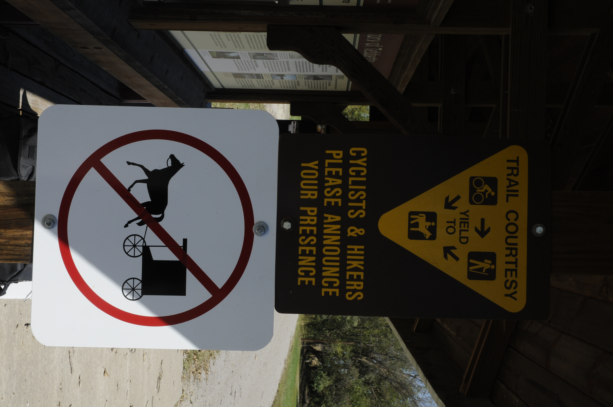
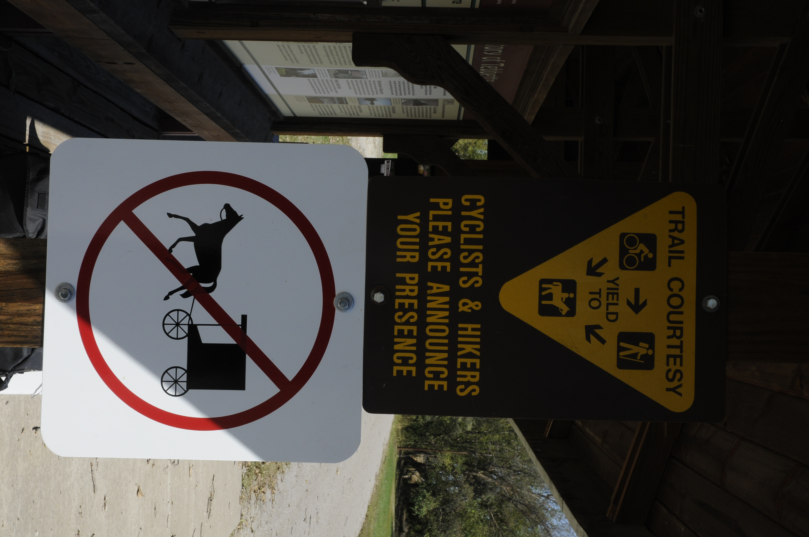

The Great bike trip


Katy Trail guide
Sing to me of the man, Muse, the man of twists and turns...
driven time and again off course,
once he had plundered the hallowed
heights of Troy.
There were not less than three times I traveled the Katy Trail by bicycle, and not more than three. Only once was epic. Only once deserving of prose. Twice I fell short before I had satisfaction. There are some who quit their jobs and travel cross country on bicycles. There are those who hike trails. There are those for whom traveling becomes a way of life, for a time. If you camp the Katy, you may meet such people. I was gone a whole six days.
When I first got the urge to bike this trail, a friend was planning on going with me. He did not. I went anyway. It was late March. I got sick and turned around. The second time a story for another time. Then there was the third time and the most recent. Again, I was supposed to go with somebody. This didn't happen. Again, I went alone. I didn't save all that vacation time for a Netflix marathon after-all. This time I defied Poseidon!I should be careful with these references while my apartment roof is out of sorts.
The Launching of Ships
What could cause a train of a thousand cars or less to travel westward across a sea of corn and soy? They say it was a face. It wasn't a face. It was the need to conquer; to challenge the fitness of one's own mind, body and spirit. To expand the territory of travel beyond what an automobile can travel. Careful now. A journey should not be measured in miles (225 one way). If not in miles how do you measure? I suppose you could measure the trail in beers, in scenery, in experience, or in roses. I did see a teddy-bear. Perhaps even that misses the mark. Perhaps it is not the point to measure the trail at all, but oneself. I rode from my apartment to the train station. Amtrak allows for 2 fairly large bags, a personal item (such as a purse, a man purse, or a handlebar bag that looks a little like a man purse), and for an extra $10 a whole bicycle. I had two buckets, two bags and a handlebar bag that doesn't look like a man purse. In hindsight I don't think Amtrak would have cared, so long as I was able to load it, but in my strict adherence to at least this rule I tied the two bags together, and the two buckets together, to create packages roughly the size of what was allowed. Nobody checked. It may or may not have been easier to leave it all on the bike. The train took me to Sedalia Missouri. This was not the end of the trail.
The Arming of the Great Warrior
My shield of Achilles was a 1987 Diamondback Ascent EX. It was an old mountain bike with braze-ons for a front rack, fenders and other magic. It went through a few iterations, including the, "I think I can make this drop-bar thing work on a mountain bike" as seen in these photos. This iteration wasn't awful. Other hacks include, but are not limited to: the buckets for front panniers, mis matched components, a strange headlight mount, and don't get me started on the rear bags. It had nice fenders and a horrible seat. The frame had been "Cold-Set" the Sheldon Brown way, and this trip would be near it's last.
The Appeal of Athena
Once I made it to Sedalia I had to touch the furthest reaches of the Katy Trail empire. I traveled further west. Clinton Missouri. The picture in Clinton doesn't do that end of the trail justice. Neither would have a picture of the actual end. The trail crosses a street and instantly becomes a grassy, overgrown railroad track from long ago. There were no railroad blocks, no do not enter signs, no cliff off the side of the world. It would have made for an underwhelming picture. Although the picture in Clinton was not the end of the trail, I promise that it was about 200 yards from the actual end.

Now my initial plan was to make Clinton the same day I got off the train and head back to Windsor for my first night of camping. A thunderstorm changed my mind. Instead, I camped in Windsor and headed west in the morning. After a picture in Clinton I came back east to the town I had intended to spend my second night anyway. This made for my longest day on the trail. It was 80 miles, on a wet limestone path, in the hilliest part of the very flat trail, while fully loaded. I got up before sunrise, made oatmeal and coffee, packed up, and pulled out at the first sign of orange glow in the eastward sky. After biking all day I came out from eating the steak dinner special at Deon's Bar and Grill I glided back to the trail-head as dusk sat in. As I was getting my bearings, and old man rolled up to look at the sign. He was either an old sage or a maniac. "I guess you're here for the free camping too? As he paused, I made my first step towards the realization he didn't have a plan in life. It was all two wheels and the road ahead for him.
The Unwise Old Man (and entertaining)
As with Cassandra, perilous truth spoken may not be always heard. I do not remember this man's name. Let's call him John. John was riding an old and failing hybrid. He was traveling west and I east. We would only meet for a day and any truth spoken left me in disbelief. After a long day riding this man told stories far into the evening and the next morning at breakfast. I don't remember all of what he spoke about. He was telling me about how he came out of the Washington DC area and headed towards Ohio where he new people. From there he had headed towards Chicago before deciding it was getting too cold. He took a bus south and was headed west on the Katy Trail where we crossed paths. As he spoke of his journey I commented about how he didn't seem to have a target in mind. He looked self conscious for a moment as he pointed out that people seem to always figure that out about him quickly. He went on about some creepy basement he had spent the night in the night before. He said it smelled like bleach, looked a little like a prison, but the homeowner seemed nice and they had bacon and eggs in the morning.
Poseidon's wrath on Cassandra
John had once planned a vacation to Belize, but when plans should have changed, he pushed on. Does that sound familiar? Hurricane Mitch was pushing in, but he had saved up his vacation, bought plane tickets, and decided to go anyway. The airline called and tried to get him to cancel. "Is the plane going? Then I'm going!" He was one of two passengers on the plane. The other man, aptly, had scuba gear. John said, when he got to the airport, no one would even speak to him or answer his questions. "They must have thought we were both just thrill seekers." he said in hindsight. Eventually one of the airport security guards realized John was just a man with a broken compass. When John asked for advice regarding the deadliest hurricane in the Atlantic since 1780, "Go inland." The security guard got on his walkie and found a school that was taking in stragglers. John got in a taxi and headed out that way. When he got there, the school was filled up. They found an old rancher who was taking in stragglers. He got another taxi. This one rode crooked, as the suspension on one side was shot. The taxi dropped John off on a dark dirt path with nothing but a flashlight and an umbrella and a small light in the distance. He drove off without making sure John survived the dark trek through the jungle of Belize to make the Ranch. As John approached the light he noticed it was a rowboat attached to a line that lead back into the woods. The rowboat pilot was hacking a way through the forest for the boat, as the water was rising. He boarded the boat and made it to the ranch without being bitten by any poisonous snakes.
After he had made it to the ranch, there was a debate on how best to save one of the buildings. The rancher decided one particular building didn't stand a chance in the winds unless they opened all the windows and let the wind just blow through. The problem was, this particular building housed all the artwork of the rancher's wife. Everyone helped to move the artwork. It was the least they could do. I don't know whether the art building made it, and unlike Cassandra, John survived.
In the Company of Creatures
After meeting John, the trek went downhill. No seriously. The Missouri river travels from west to the east, and the trail follows the river. Am I clear??


 
